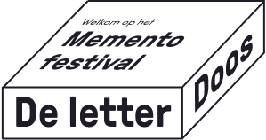

Informatie over De Letterdoos

De letterdoos is een fysieke installatie op het festival, maar via deze website brengen we het festival naar jou toe. Jij bepaalt, samen met de rest van de online community wat er op de installatie komt te staan.